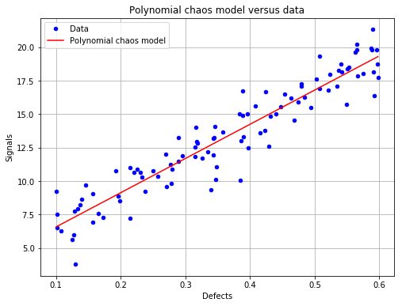
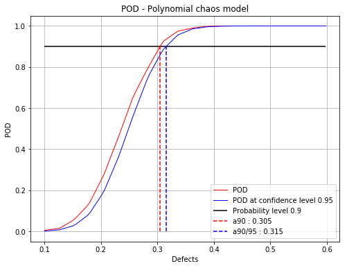

Polynomial chaos POD¶
[1]:
# import relevant module
import openturns as ot
import otpod
# enable display figure in notebook
try:
%matplotlib inline
except:
pass
/calcul/home/dumas/anaconda/lib/python3.6/site-packages/sklearn/ensemble/weight_boosting.py:29: DeprecationWarning: numpy.core.umath_tests is an internal NumPy module and should not be imported. It will be removed in a future NumPy release.
from numpy.core.umath_tests import inner1d
Generate 1D data¶
[2]:
N = 100
ot.RandomGenerator.SetSeed(123456)
defectDist = ot.Uniform(0.1, 0.6)
# normal epsilon distribution
epsilon = ot.Normal(0, 1.9)
defects = defectDist.getSample(N)
signalsInvBoxCox = defects * 43. + epsilon.getSample(N) + 2.5
# Inverse Box Cox transformation
invBoxCox = ot.InverseBoxCoxTransform(0.3)
signals = invBoxCox(signalsInvBoxCox)
Build POD with polynomial chaos model¶
[3]:
# signal detection threshold
detection = 200.
# The POD with censored data actually builds a POD only on filtered data.
# A warning is diplayed in this case.
POD = otpod.PolynomialChaosPOD(defects, signals, detection,
noiseThres=200., saturationThres=1700.,
boxCox=True)
INFO:root:Censored data are not taken into account : the polynomial chaos model is only built on filtered data.
User-defined defect sizes¶
The user-defined defect sizes must range between the minimum and maximum of the defect values after filtering. An error is raised if it is not the case. The available range is then returned to the user.
[4]:
# Default defect sizes
print('Default defect sizes : ')
print(POD.getDefectSizes())
# Wrong range
try:
POD.setDefectSizes([0.12, 0.3, 0.5, 0.57])
except ValueError as e:
print('')
print('Range of the defect sizes is too large, it returns a value error : ')
print(e)
Default defect sizes :
[0.19288542 0.21420345 0.23552149 0.25683952 0.27815756 0.29947559
0.32079363 0.34211166 0.3634297 0.38474773 0.40606577 0.4273838
0.44870184 0.47001987 0.49133791 0.51265594 0.53397398 0.55529201
0.57661005 0.59792808]
Range of the defect sizes is too large, it returns a value error :
Defect sizes must range between 0.1929 and 0.5979.
[5]:
# Good range
POD.setDefectSizes([0.1929, 0.3, 0.4, 0.5, 0.5979])
print('User-defined defect size : ')
print(POD.getDefectSizes())
User-defined defect size :
[0.1929 0.3 0.4 0.5 0.5979]
Running the polynomial chaos based POD¶
The computing time can be reduced by setting the simulation size attribute to another value. However the confidence interval is less accurate.
The sampling size is the number of the samples used to compute the POD with the Monte Carlo simulation for each defect sizes.
A progress is displayed, which can be disabled with the method setVerbose.
[6]:
# Computing the confidence interval in the run takes few minutes.
POD = otpod.PolynomialChaosPOD(defects, signals, detection,
boxCox=True)
# we can change the sample size of the Monte Carlo simulation
POD.setSamplingSize(2000) # default is 5000
# we can also change the size of the simulation to compute the confidence interval
POD.setSimulationSize(500) # default is 1000
# we can change the degree of the polynomial chaos, default is 3.
POD.setDegree(3)
POD.run()
Start build polynomial chaos model...
Polynomial chaos model completed
Polynomial chaos validation R2 (>0.8) : 0.8947
Polynomial chaos validation Q2 (>0.8) : 0.8914
Computing POD per defect: [==================================================] 100.00% Done
Compute detection size¶
[7]:
# Detection size at probability level 0.9
# and confidence level 0.95
print(POD.computeDetectionSize(0.9, 0.95))
# probability level 0.95 with confidence level 0.99
print(POD.computeDetectionSize(0.95, 0.99))
[a90 : 0.307344, a90/95 : 0.314406]
[a95 : 0.328888, a95/99 : 0.335715]
get POD Function¶
[8]:
# get the POD model
PODmodel = POD.getPODModel()
# get the POD model at the given confidence level
PODmodelCl95 = POD.getPODCLModel(0.95)
# compute the probability of detection for a given defect value
print('POD : {:0.3f}'.format(PODmodel([0.3])[0]))
print('POD at level 0.95 : {:0.3f}'.format(PODmodelCl95([0.3])[0]))
POD : 0.871
POD at level 0.95 : 0.841
Compute the R2 and the Q2¶
Enable to check the quality of the model.
[9]:
print('R2 : {:0.4f}'.format(POD.getR2()))
print('Q2 : {:0.4f}'.format(POD.getQ2()))
R2 : 0.8947
Q2 : 0.8914
Show POD graphs¶
Mean POD and POD at confidence level with the detection size for a given probability level¶
[10]:
fig, ax = POD.drawPOD(probabilityLevel=0.9, confidenceLevel=0.95,
name='figure/PODPolyChaos.png')
# The figure is saved in PODPolyChaos.png
fig.show()
/calcul/home/dumas/anaconda/lib/python3.6/site-packages/matplotlib/figure.py:459: UserWarning: matplotlib is currently using a non-GUI backend, so cannot show the figure
"matplotlib is currently using a non-GUI backend, "
Show the polynomial chaos model (only available if the input dimension is 1)¶
[11]:
fig, ax = POD.drawPolynomialChaosModel()
fig.show()
/calcul/home/dumas/anaconda/lib/python3.6/site-packages/matplotlib/figure.py:459: UserWarning: matplotlib is currently using a non-GUI backend, so cannot show the figure
"matplotlib is currently using a non-GUI backend, "

Advanced user mode¶
The user can defined one or all parameters of the polynomial chaos algorithm :
the distribution of the input parameters
the adaptive strategy
the projection strategy
[12]:
# new POD study
PODnew = otpod.PolynomialChaosPOD(defects, signals, detection,
boxCox=True)
[13]:
# define the input parameter distribution
distribution = ot.ComposedDistribution([ot.Normal(0.3, 0.1)])
PODnew.setDistribution(distribution)
[14]:
# define the adaptive strategy
polyCol = [ot.HermiteFactory()]
enumerateFunction = ot.LinearEnumerateFunction(1)
multivariateBasis = ot.OrthogonalProductPolynomialFactory(polyCol, enumerateFunction)
# degree 1
p = 1
indexMax = enumerateFunction.getStrataCumulatedCardinal(p)
adaptiveStrategy = ot.FixedStrategy(multivariateBasis, indexMax)
PODnew.setAdaptiveStrategy(adaptiveStrategy)
[15]:
# define the projection strategy
projectionStrategy = ot.LeastSquaresStrategy()
PODnew.setProjectionStrategy(projectionStrategy)
[16]:
POD.setSamplingSize(2000)
POD.setSimulationSize(500)
PODnew.run()
Start build polynomial chaos model...
Polynomial chaos model completed
Polynomial chaos validation R2 (>0.8) : 0.8947
Polynomial chaos validation Q2 (>0.8) : 0.8914
Computing POD per defect: [==================================================] 100.00% Done
[17]:
print(PODnew.computeDetectionSize(0.9, 0.95))
print('R2 : {:0.4f}'.format(POD.getR2()))
print('Q2 : {:0.4f}'.format(POD.getQ2()))
[a90 : 0.304772, a90/95 : 0.315494]
R2 : 0.8947
Q2 : 0.8914
[18]:
fig, ax = PODnew.drawPOD(probabilityLevel=0.9, confidenceLevel=0.95)
fig.show()
/calcul/home/dumas/anaconda/lib/python3.6/site-packages/matplotlib/figure.py:459: UserWarning: matplotlib is currently using a non-GUI backend, so cannot show the figure
"matplotlib is currently using a non-GUI backend, "

[19]:
fig, ax = PODnew.drawPolynomialChaosModel()
fig.show()
/calcul/home/dumas/anaconda/lib/python3.6/site-packages/matplotlib/figure.py:459: UserWarning: matplotlib is currently using a non-GUI backend, so cannot show the figure
"matplotlib is currently using a non-GUI backend, "
[ ]: